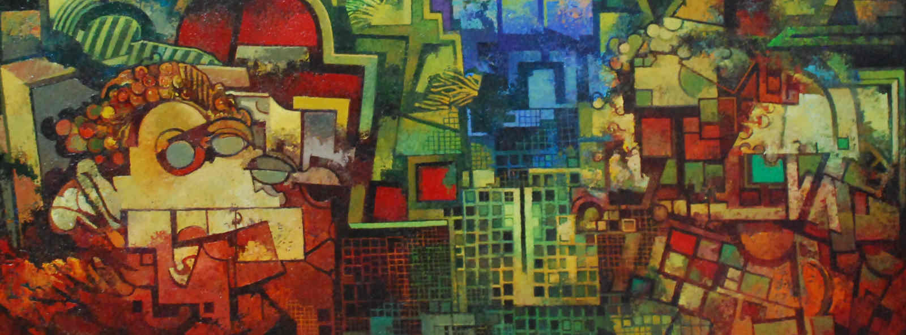

Inicio
Bienvenidos a mi página, donde podréis hacer un viaje y conocer mi obra, así como todos los campos artísticos que he tocado durante mis 50 años dedicados a las Artes Plásticas. Tal vez os sorprenda ver tantos estilos diferentes en mi trayectoria profesional, os puedo asegurar que es el resultado de la búsqueda continua de mi mismo, y de la exigencia por la perfección y de como expresar lo que llevo dentro.

Tan sólo desearos que disfrutéis contemplando mí obra y con ello me sentiré satisfecho, al menos mi esfuerzo habrá valido la pena.